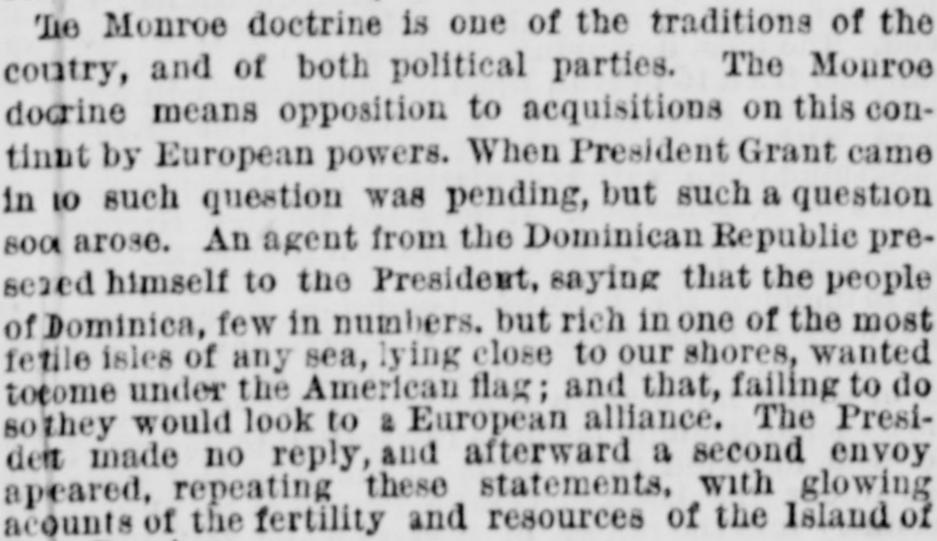
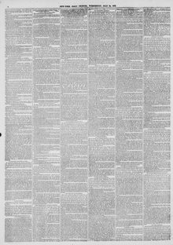

When President Grant came in 0 such question was pending, butCuando el presidente Grant tomó posesión, no estaba pendiente cuestión alguna de esa clase, pero
New-York Tribune. New York [N.Y.], July 24, 1872. Page 2. View the originalVer el original


See the full pageVer la página completaThe New-York Tribune reviewed President Grant’s pursuit of Dominican annexation, explaining that Dominican envoys had sought admission into the United States to prevent European intervention. Citing past military assessments by McClellan and Porter regarding the island's strategic location and mineral wealth, Grant dispatched confidential observers before negotiating an annexation treaty to present to the Senate.El New-York Tribune examinó las gestiones del presidente Grant en pro de la anexión dominicana, aduciendo que emisarios de Santo Domingo habían solicitado su incorporación a los Estados Unidos para conjurar intervenciones europeas. Basándose en dictámenes militares previos de McClellan y Porter sobre la ubicación estratégica y la riqueza minera de la isla, Grant destacó observadores confidenciales antes de acordar un tratado de anexión para someterlo a la consideración del Senado.
FULL TEXT:TEXTO COMPLETO:
THE DOMINICAN TREATY.EL TRATADO DOMINICANO.
Let us examine the evidence, and, first of all, take up the charges and evidence against him. The Santo Domingo Treaty, unlike going to Long Branch, smoking a cigar, or riding in a palace-car, was a piece of public business, and is, therefore, a topic not forbidden or unworthy. His guilt and his innocence in this respect can all be briefly stated.Examinemos la evidencia, y, en primer lugar, tomemos los cargos y la evidencia contra él. El Tratado de Santo Domingo, a diferencia de ir a Long Branch, fumar un cigarro, o viajar en un coche palacio, era un asunto de negocio público, y es, por tanto, un tema no prohibido ni indigno. Su culpa y su inocencia a este respecto pueden exponerse brevemente.
The Monroe doctrine is one of the traditions of our country, and of both political parties. The Monroe doctrine means opposition to acquisitions on this continent by European powers. When President Grant came in no such question was pending, but such a question soon arose. An agent from the Dominican Republic presented himself to the President, saying that the people of Dominica, few in numbers, but rich in one of the most fertile isles of any sea, lying close to our shores, desired to come under the American flag; and that, failing this, that they would look to a European alliance. The President made no reply, and afterward a second agent appeared, repeating these statements, with glowing accounts of the fertility and resources of the Island of Santo Domingo.La doctrina Monroe es una de las tradiciones de nuestro país, y de ambos partidos políticos. La doctrina Monroe significa oposición a adquisiciones en este continente por potencias europeas. Cuando el presidente Grant entró no estaba pendiente tal cuestión, pero tal cuestión surgió pronto. Un agente de la República Dominicana se presentó ante el Presidente, diciendo que el pueblo de Dominica, pocos en número, pero rico en una de las islas más fértiles de cualquier mar, situada cerca de nuestras costas, deseaba venir bajo la bandera estadounidense; y que, de no lograr esto, buscarían una alianza europea. El Presidente no dio respuesta, y después apareció un segundo agente, repitiendo estas declaraciones, con brillantes relaciones de la fertilidad y los recursos de la Isla de Santo Domingo.
Gen. McClellan, Admiral Porter, Commissioner Fabens and others had previously examined and reported upon the island, and had strongly stated its advantages as a coaling station, a naval station, a military key to the Gulf of Mexico, and as an area prolific in coffee, sugar cane, rice, dye-stuffs, mahogany, and other valuable woods, and in other products of the tropics, besides coal, copper, gold and salt.El general McClellan, el almirante Porter, el comisionado Fabens y otros habían examinado e informado anteriormente sobre la isla, y habían declarado fuertemente sus ventajas como estación carbonífera, estación naval, llave militar del Golfo de México, y como un área prolífica en café, caña de azúcar, arroz, tintes, caoba, y otras maderas valiosas, y en otros productos de los trópicos, además de carbón, cobre, oro y sal.